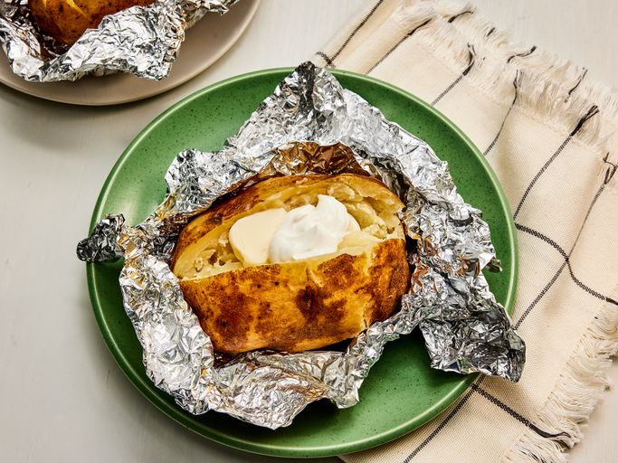

Slow Cooker Baked Potatoes

Description
These crockpot baked potatoes are a super-easy way to bake potatoes
without heating the kitchen.
Ingredients
- 4 baking potatoes, well scrubbed
- 1 tablespoon extra virgin olive oil
- kosher salt to taste
- 4 sheets aluminum foil
Steps
- Gather all ingredients.
-
Prick potatoes with a fork several times, then rub with olive oil and
season with salt.
- Wrap tightly in foil and place into the slow cooker.
-
Cook until tender, on Low for 7 1/2 hours or on High for 4 1/2 to 5
hours.
- Serve with your choice of toppings and enjoy!
Back to Recipes